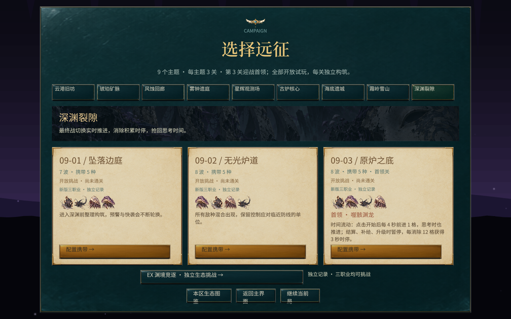

消除工坊 / 关卡
九个世界，九种生态挑战
27个战役关卡之外，每章另有一关EX：考验你如何利用敌人之间的关系。
换世界，也换应对
从快速敌人到冰封、潮汐与实时首领，重新考虑携带与布置。
观察它们怎样相处
断开伴生治疗、打破晶体争夺，或借捕食者牵制另一只怪。

每章三关与独立EX，可切换职业挑战。玩法与操作展开规则、操作与数值
顺序
- 第一局走云港第一关，炮术师推荐构筑。
- 同一关再换机关师或护幕师，对比资源和操作。
- EX 有独立记录，不替换三关，也不叠本章首领。进之前先看怪和怪的关系。
九章
- 云港 / 琥珀 / 风蚀
- 基础协同、护甲、高速。
- 雾钟 / 星辉 / 古炉
- 棋盘干扰、星印与观测、炉温和混合压力。
- 海底 / 霜岭 / 深渊
- 潮汐与护盾、冰封与重甲、实时首领。
EX
- 碰撞与争夺
- 横冲：冲锋撞到其他怪。夺晶：持晶者带盾。争巢：后到的抢位置。
- 伴生与寄生
- 伴生：拉开就断治疗。寄生：寄虫强化并消耗宿主，可先杀寄虫。
- 环境与捕食
- 冷热：互打并留下区域。猎影：真的吃到才回血。
- 护幼与混合
- 护幼：母兽拦掠食者，幼兽死了会预告报复。渊境：争巢、捕食、伴生混在一起。
改了什么
关卡扩展
短战役扩成九章 27 关。怪物、背景、首领按主题分开配。
统一战斗
试炼里验证过的多怪、血条、轨道和意图接回正式入口。
独立 EX
生态单独做成每章一关，不和首领机制叠在一起。首领另外验收。
迭代记录 ↗